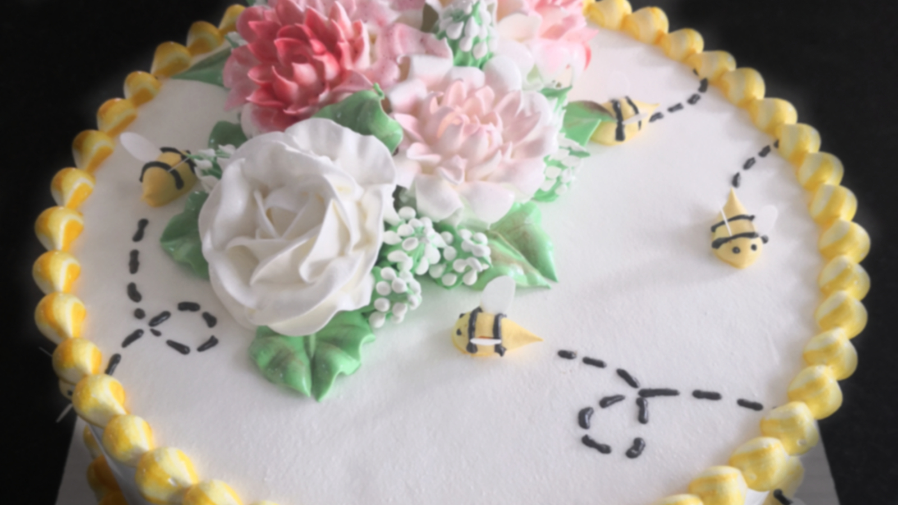

Técnica · Hoja de Arroz
Temáticos con Hoja de Arroz
Impresión comestible en hoja de arroz con el personaje o ilustración favorita del cumpleañero, acompañada de bordes y combinaciones de color en lustre de mantequilla.